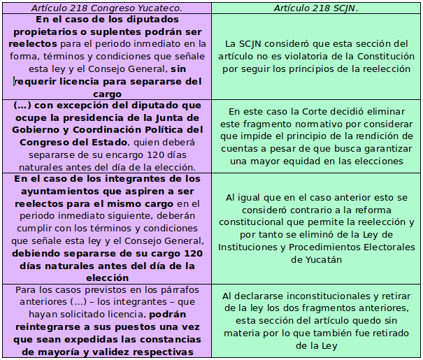

Reelección, equidad y licencias en Yucatán
Acción de Inconstitucionalidad 50/2017
por
Samuel González Cataño
El pasado 29 de agosto el pleno de la Suprema Corte de Justicia de la Nación (SCJN o la Corte) declaró inconstitucional la obligación de solicitar licencia para aspirar a cargos de reelección para los diputados y miembros de los ayuntamientos del Estado de Yucatán.
En su argumentación los Ministros expusieron los diversos principios que se encuentran alrededor de la discusión sobre reelección, entre ellos la igualdad y la rendición de cuentas, siendo este último por el cual se inclinaron en su decisión. Con esto parece que la reelección se abre paso como una opción política frente a una idea enquistada y tradicional que la califica como negativa.
Este texto expone los razonamientos de los Ministros que sustentan la inconstitucionalidad de las licencias en Yucatán. Previamente, en la sección 1, explicaré brevemente por qué este asunto se decidió en la SCJN y no en el Tribunal Electoral del Poder Judicial de la Federación (TEPJF). Posteriormente, en la sección 2, abordaré brevemente dos temas que también discutió la SCJN en la acción de inconstitucionalidad que nos ocupa: distribución del financiamiento a los partidos y el servicio profesional electoral. Finalmente, en la sección 3 abordaré los argumentos de la sentencia, para concluir en la sección 4 con algunas de las implicaciones que está decisión tendrá para otros escenarios de la reelección en México.
1 La SCJN en la materia electoral
Históricamente la Corte ha mantenido distancia de la materia electoral, sobre todo en cuestiones de amparo. A finales del siglo XIX se desarrolló la famosa disputa Iglesias–Vallarta en el máximo tribunal. El juez Iglesias sustentaba que la Corte debía ser la única instancia con capacidad de decidir en la materia electoral, mientras que Vallarta argumentaba en contra de que la Corte se introdujera en temas electorales, por considerarlos de índole política y un riesgo para la autonomía judicial.1
Resultó vencedora la tesis de Vallarta, que se mantuvo prácticamente intacta hasta las reformas a la ley de amparo de 1994, en donde se instauraron la acción y controversia constitucionales, y de 1996, en donde se creó el TEPJF y se instauró el juicio para la protección de los derechos político-electorales (JPPDPE). Estas reformas dejaron atrás la tesis Vallarta a más de un siglo de su instauración, dotando finalmente de jurisdiccionalidad a la materia electoral. La primera de estas reformas permitió a ciertos sujetos como son partidos e instancias de gobierno para someter la normatividad electoral a un control de constitucionalidad, mientras que la segunda permitió lo mismo para los individuos a través del JPPDPE y creó un Tribunal especializado en la materia.2
Esta incursión del Poder Judicial en la materia electoral se concretó aún más con el caso resuelto en 2008 por la Corte Interamericana de Derechos Humanos (CorteIDH) Castañeda Grutman vs. México en el cual el ciudadano mexicano Jorge Castañeda denunció al Estado mexicano por la falta de una provisión para ser candidato independiente y de los medios adecuados para hacer valer sus derechos político-electorales frente a una jurisdicción al interior del país.
En dicha sentencia la CorteIDH condenó al Estado mexicano a una serie de reparaciones, pero una de ellas fue incluir la protección de los derechos político-electorales no solo a los individuos miembros de un partido, como lo marcaba la reforma electoral de 1996, sino a cualquier sujeto que deseara ejercer estos derechos activa o pasivamente.3
Ahora bien, dado que el orden jurídico mexicano cuenta con juicios y tribunales específicos para desahogar la materia electoral, ¿porqué la SCJN decidió sobre la inconstitucionalidad de las licencias en el Estado de Yucatán? Es así porque lo que se promovió no fue una violación a los derechos de un individuo sino un juicio para el control de la constitucionalidad de una serie de normas, promovido por el partido político MORENA.
Como mencioné anteriormente, la reforma electoral que permitió las Acciones de Inconstitucionalidad, reservó este procedimiento de control de la constitucionalidad a una serie de sujetos que se encuentran ostensivamente numerados en el artículo 105 de la Constitución Política Mexicana (CPEUM)
2 ¿Qué se decidió en la AI 50/2017?
La Acción de inconstitucionalidad (AI) 50/2017 promovida por MORENA no solo impugnaba la constitucionalidad de las licencias sino de una serie de temas que a continuación serán resumidos, acompañados de lo que resolvieron los ministros de la SCJN en cada cuestión.
a) Reducción de un 50% del financiamiento público para actividades ordinarias de los partidos políticos, cuando no se desarrolle proceso electoral para destinarlos a una institución de asistencia privada. Al respecto la SCJN decidió que el presupuesto de los partidos no está disponible para los congresos locales y que este se encuentra en la CPEUM y en Leyes Generales por lo que no puede distribuirse de otra forma. Otra cuestión interesante al respecto, sobre la que la Corte no se pronunció pues no entro a estudiar el fondo del asunto, fue la elección arbitraria de una institución de asistencia privada a la cual se destinaban los recursos.
b) Constitucionalidad de la facultad del Congreso local para elegir y remover al titular del órgano interno de control del Instituto Electoral del Estado. El partido político MORENA argumentaba que esto invadía la competencia de los institutos electorales, poniendo en riesgo su autonomía. Sin embargo, la Corte, en un voto dividido, considero válidos el artículo 75 de la Constitución de Yucatán y el 138 de la Ley de Instituciones y Procedimientos Electorales del Estado que instauraron esto por no encontrar ningún precepto constitucional en contra.
c) Atribuciones del Consejo General del Instituto Electoral del Estado para las cuestiones que se refieran a ese personal. El artículo 123 de la Ley de Instituciones y Procedimientos Electorales del Estado establecía que el Instituto Electoral Yucateco debía “Aprobar el acuerdo de designación e incorporación del personal del Servicio Profesional Electoral Nacional”. Sobre la cuestión del Servicio profesional electoral nacional, la SCJN ya se había pronunciado anteriormente sobre que este correspondía únicamente al Instituto Nacional Electoral (INE), por lo que el pleno en votación económica decidió declarar inválido este articulo para evitar la invasión de competencias.
d) Autorización para continuar en el cargo a los diputados que pretendan la reelección, con excepción del Presidente de la Junta de Gobierno y Coordinación Política. Los incisos d) y e) en el orden del día 29 de agosto del pleno de la SCJN versan sobre la exigencia de licencia para aspirar a cargos de reelección que se encuentran en el artículo 218 de la Ley de Instituciones y Procedimientos Electorales del Estado, por lo que se estudian en el apartado 3.
e) Autorización para que se reincorporen a sus puestos a los integrantes de Ayuntamientos y al citado funcionario parlamentario, una vez que sean expedidas las constancias de mayoría y validez respectivas, si es que estos hubieren solicitado licencia.
f) Asignación de la totalidad de las regidurías a la planilla que hubiera obtenido el mayor número de votos en la elección de las regidurías de mayoría relativa. La mayoría de los ministros votaron para declarar la validez de este precepto, aunque algunos de ellos anunciaron estar en contra y que realizarán voto particular.
3 Incompatibilidad de la licencia y la reelección
Para un mejor entendimiento de esta sección se acompaña del Cuadro 1, en el que se puede observar una comparación entre el artículo 218 de la Ley de Instituciones y Procedimientos Electorales de Yucatán tal como lo aprobó el Congreso Yucateco (color violeta) y tal como quedó una vez declarada la inconstitucionalidad de algunos de sus párrafos (color pistache).

Figura 1: Comparación del texto legal antes y después del fallo de la SCJN
El proyecto, realizado por la Ministra Margarita Luna Ramos, en un principio consideraba válido el artículo tal cual lo legisló el Congreso del Estado, sin embargo al momento de realizarse la discusión y votación se revirtió el sentido y se terminó votando por unanimidad la invalidez de los preceptos señalados anteriormente.
La argumentación de la ponente versaba principalmente sobre los argumentos tradicionales de los riesgos de la reelección: el uso de recursos públicos para realizar campaña desde el puesto o la inequidad que esto genera para los contendientes que no tienen acceso a los recursos y a una posición con mayor visibilidad como el contendiente a reelegirse.
Sin embargo, la mayoría de los Ministros, en alguna u otra forma, se pusieron del lado de la reforma Constitucional de 2014 (insertar link al otro archivo EN CONSTRUCCION que hablará de esto). Las defensas se formularon a modo de interpretaciones de la Constitución, entre las cuales se pudieron observar varias:
- La interpretación que exponía el proyecto antes descrito, se asemeja a una interpretación literal del texto de la Ley del Estado, pero no hace un verdadero esfuerzo por actualizarse con respecto a las recientes reformas a la CPEUM sino que se enquista en un argumento histórico que el Constituyente Permanente pretendió dejar atrás en 2014
- El Ministro José Ramón Cossío, con el cual estuvo de acuerdo la mayoría, expuso una interpretación teleológica de la Constitución. Explicando que si se había re-instaurado la reelección legislativa y municipal, esto tenía un fin de permitir una mejor rendición de cuentas de los servidores públicos en el cargo y la exigencia de licencia obstruiría este fin
- Por otro lado el Ministro Arturo Zaldívar realizó una interpretación analógica, llevando la exigencia de licencia a sus últimas consecuencias y poniendo como ejemplo que si los parlamentarios del Reino Unido o el presidente de los Estados Unidos tuvieran que pedir licencia antes de buscar la reelección se provocaría un shutdown del gobierno cada periodo electoral
- Por último la Ministra Norma Lucía Piña expuso una interpretación conforme, en la cual se considera que un enunciado puede contener una serie de interpretaciones normativas y la norma debe prevalecer si al menos uno de estos enunciados puede considerarse constitucional. Al respecto, la Ministra dijo que sobre las licencias, estas debían seguir existiendo para aquellos servidores de elección pública que buscaran pasar de un cargo a otro y no a una reelección en el mismo
Finalmente se decidió en contra del proyecto original de la Ministra Margarita Luna Ramos, privilegiando los principios de la reelección. En cuanto a la sección que hablaba de los diputados y que diferenciaba no exigiendo licencia en general pero si al presidente de la Junta de Gobierno y Coordinación Política del Congreso, la Corte decidió homogeneizar el criterio no exigiendo licencia a ninguno de ellos. Al respecto el Ministro Zaldívar incluso sugirió, sin mucho éxito entre los Ministros, encuadrarlo en un caso de discriminación al amparo de las categorías sospechosas señaladas en el artículo primero constitucional. Posteriormente, sobre los miembros de los ayuntamientos, la SCJN decidió señalar como inconstitucional toda la sección, eliminando este requerimiento de plano. Sobre la posibilidad de reintegrarse a sus puestos una vez realizada la elección, también se eliminó esta sección pues se quedó sin materia al derogarse las secciones anteriores.
Como puede observarse los Ministros hicieron un estudio a profundidad sobre la problemática, ofreciendo una serie de argumentos para su invalidez. El presente artículo fue realizado sobre la base de la Versión Estenográfica de la Suprema Corte del día 29 de agosto por lo que puede haber discrepancias en los fundamentos de la invalidez al momento de la publicación de la Acción de Inconstitucionalidad.
4 Conclusión e implicaciones de la decisión
La decisión sobre la Acción de Inconstitucionalidad 50/2017 significó la primera en su tipo para normatividad electoral local, por lo que sienta un precedente claro para otras legislaturas que también consideran las licencias obligatorias (p.e. Aguascalientes) (insertar link al trabajo de José Ramón).
Como analiza en el texto (link al texto EN CONSTRUCCION de Adolfo y José Ramón) existen una serie de distintas provisiones sobre las licencias en casos de reelección para distintos Estados de la República. Desde la exigencia en todos sus niveles, pasando por la exigencia a algunos funcionarios, la opción voluntaria de pedir licencia y terminando con la no exigencia en lo absoluto. La AI estudiada, aunque no es un criterio obligatorio para decidir futuros litigios similares por parte de la SCJN, sí es indicativa del razonamiento del Máximo Tribunal al respecto y tendrían que forjar nuevos razonamientos e informaciones para revertir el sentido de la decisión. Además que aunque la jurisprudencia no es del todo claro, los más recientes criterios parecen apuntar a que la jurisprudencia derivada de Acciones de Inconstitucionalidad si es vinculante para casos similares que pudieran presentarse mediante un JPPDPE ante el TEPJF; por ejemplo, un diputado en un Estado x con una legislación similar a la del Estado de Yucatán.
La AI estudiada deja clara la postura de la Corte para funcionarios que persiguen la reelección para el mismo puesto, sin embargo, falta por conocer el criterio que guarde para funcionarios que busquen saltar de un puesto a otro. Aunque es fácil intuir, por ejemplo, de las intervenciones de las Ministra Margarita Luna Ramos y Norma Lucía Piña, que este tipo de reelección indirecta no es tan bien vista y respaldada por los mismos principios.
De cualquier forma para conocer sobre estos criterios habrá que esperar, pues cabe recordar que el Poder Judicial en materia de constitucionalidad no actúa de oficio sino a petición de parte, y no puede intervenir hasta que algún otro de los agentes autorizados por la Constitución presente un juicio de control de la constitucionalidad en alguna instancia.
Nota al pie de página:
Ackerman, J. "Elecciones, Amparo y Garantías Individuales" in Biblioteca Virtual del IIJ (pp. 1-29), Ciudad de México: UNAM.
Vea Ojesto, J. "Juicio para la protección de los derechos político-electorales del ciudadano" in Biblioteca Virtual del IIJ (pp. 217-233), Ciudad de México: UNAM; y Sánchez, A. (2003) "Los jueces ante la política : la democracia y el ejercicio del control constitucional", tesis de licenciatura, ITAM.
Carmona Tinoco, J. U. "El caso Jorge Castañeda Gutman vs. Estados Unidos Mexicanos frente a la Corte Interamericana de Derechos Humanos" in Biblioteca Virtual del IIJ (pp. 775-790), Ciudad de México: UNAM.